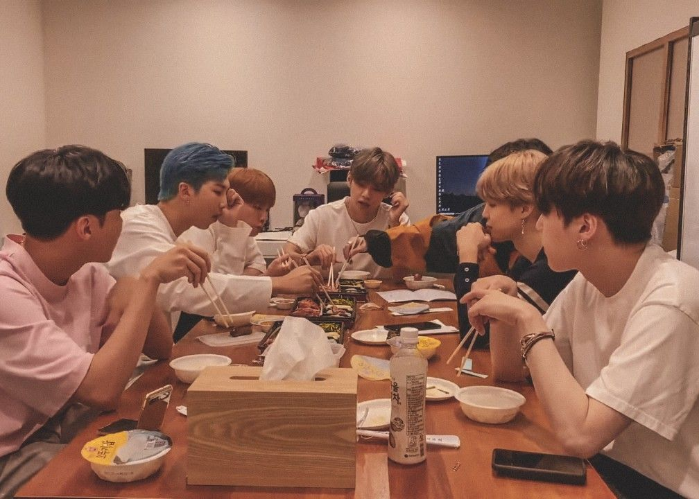
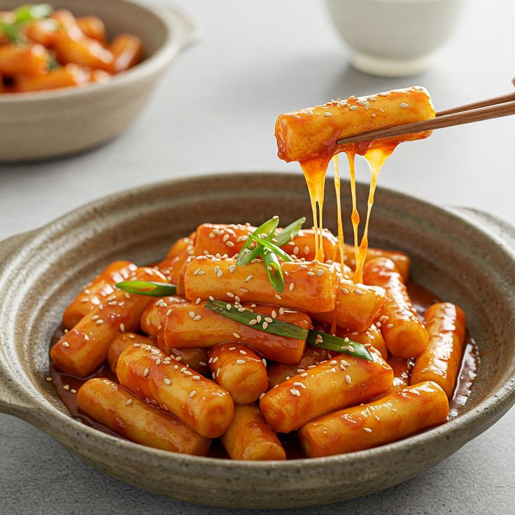
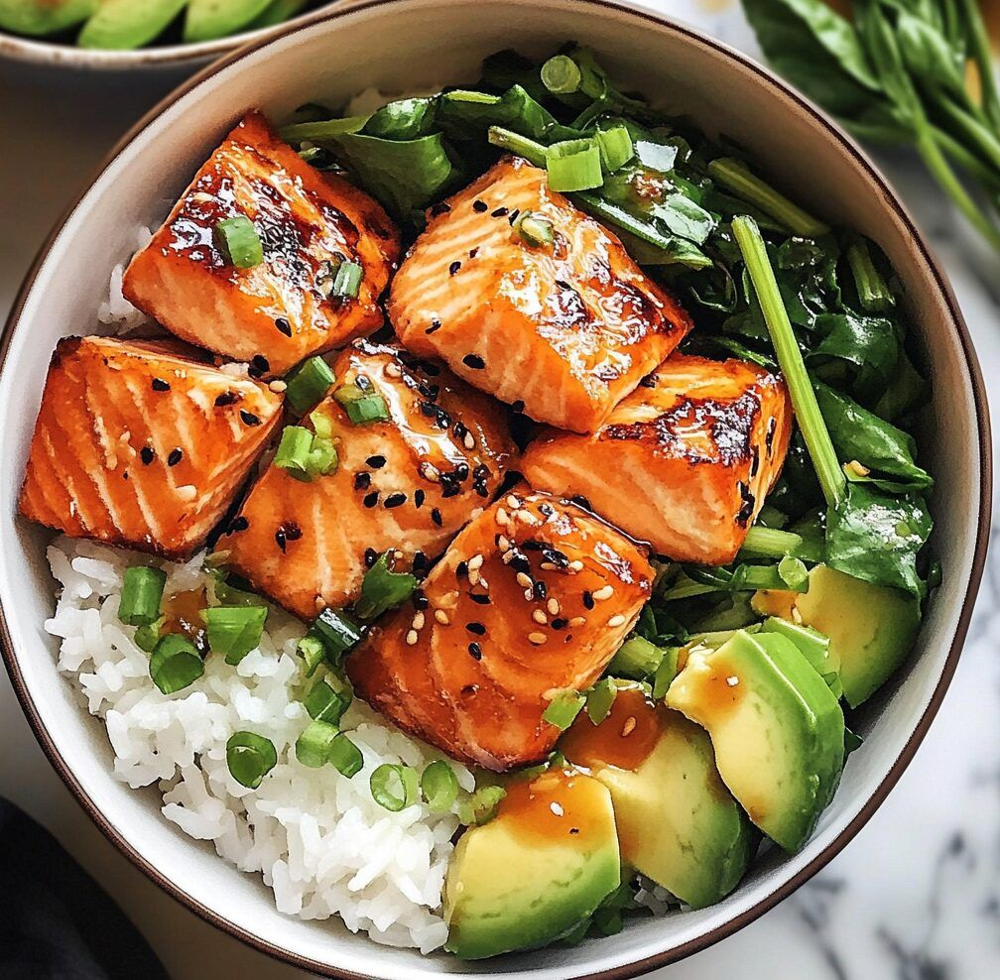
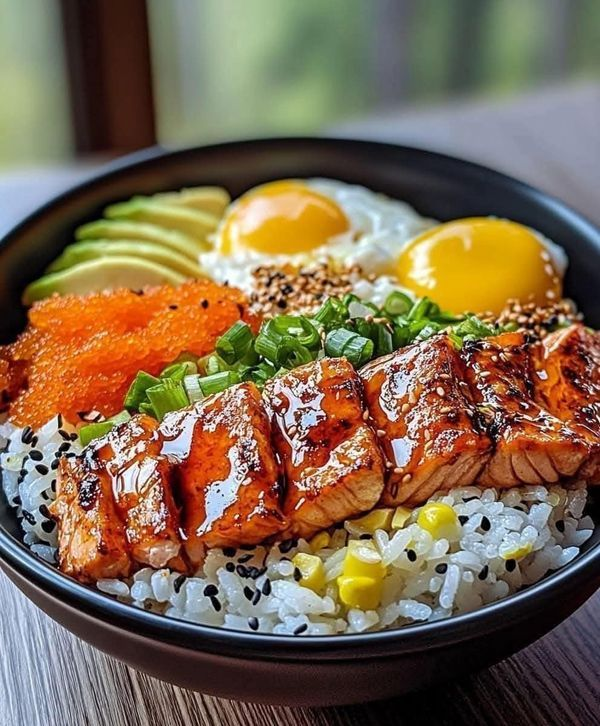
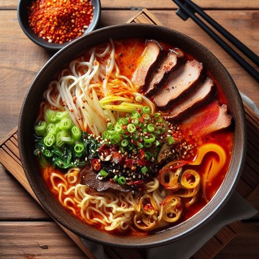
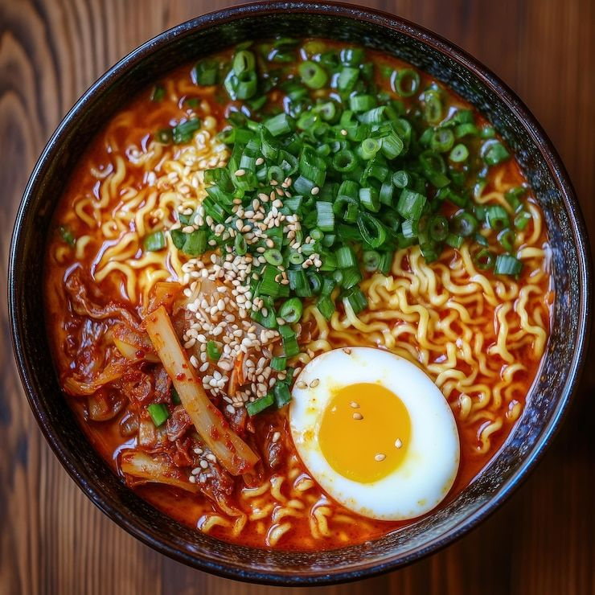
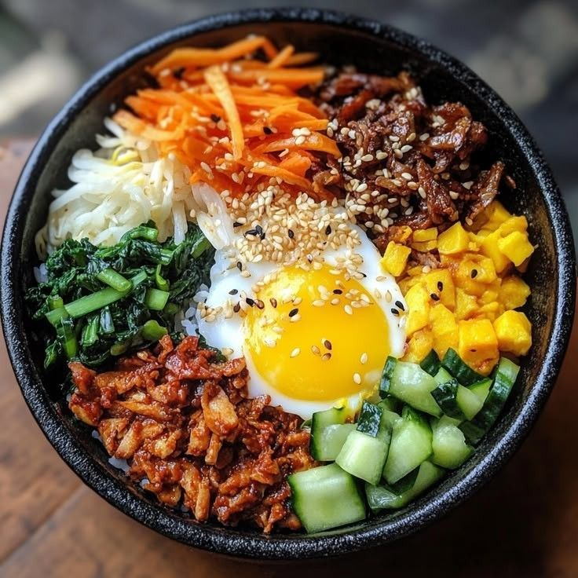

CULINÁRIA DA CORÉIA DO SUL

A culinária da Coreia do Sul é uma das mais ricas e tradicionais da Ásia, marcada pelo equilíbrio entre sabores intensos, ingredientes frescos e técnicas milenares de fermentação. Mais do que alimentação, a comida coreana representa cultura, história e convivência.
A culinária sul-coreana valoriza a harmonia visual e nutricional dos pratos. As refeições tradicionais costumam incluir arroz, sopa, prato principal e diversos acompanhamentos chamados banchan, servidos simultaneamente para serem compartilhados.





